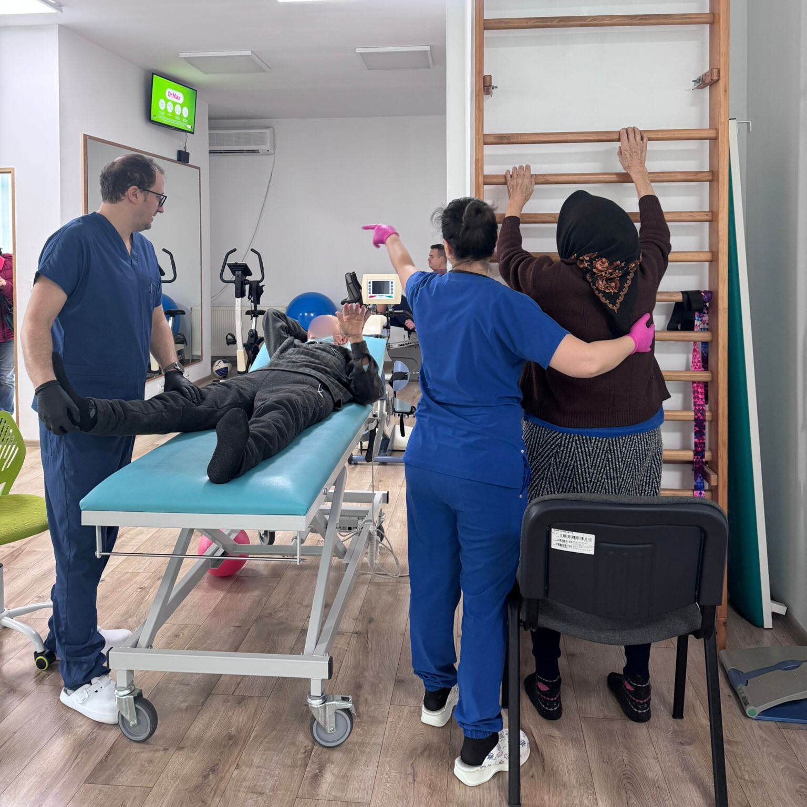
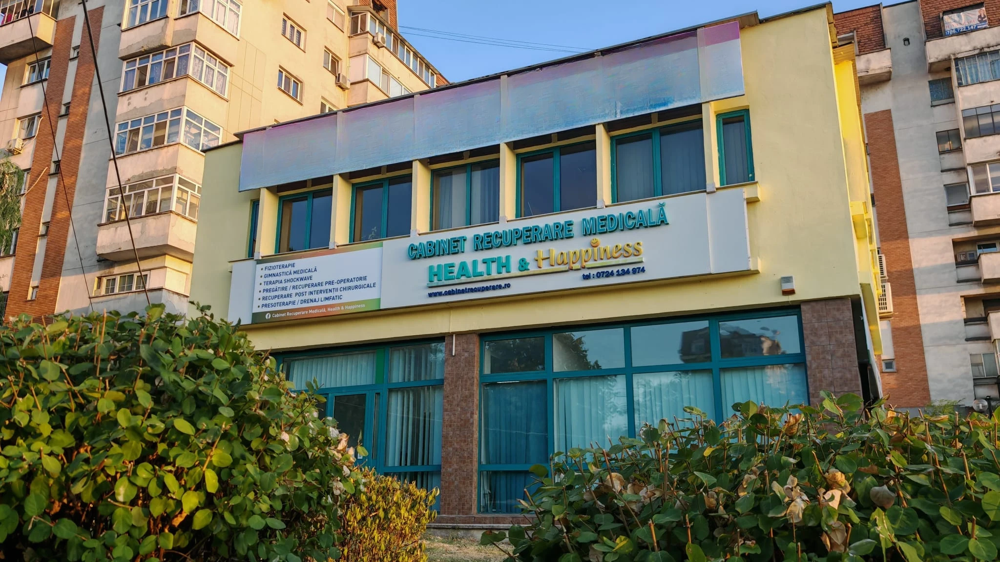

Serviciile noastre de recuperare medicală
Kinetoterapia, Fizioterapia și terapia Shockwave sunt realizate cu aparatură medicală de ultimă generație!
-
Fizioterapie
Proceduri moderne care accelerează vindecarea, reduc inflamația și sprijină refacerea țesuturilor.
Află mai multe -
Kinetoterapie
Exerciții adaptate nevoilor tale pentru reducerea durerii și recăpătarea mobilității.
Află mai multe -
Terapia Shockwave
Tratament non-invaziv pentru dureri cronice și afecțiuni musculo-scheletale, cu rezultate rapide.
Află mai multe -
Presoterapia
Terapie de drenaj limfatic ce ajută la reducerea edemelor, a disconfortului și la îmbunătățirea circulației.
Află mai multe -
Electrostimulare
Stimularea controlată a mușchilor pentru tonifiere, recuperare musculară și reducerea durerii.
Află mai multe -
Kinesiotape
Bandajare elastică ce susține mușchii și articulațiile, reducând durerea și facilitând mișcarea.
Află mai multe
Despre noi
Abordare medicală modernă bazată pe evaluare și tratament personalizat
Scopul nostru
Este de a reda capacitatea de mișcare și funcționalitate a pacienților care se confruntă cu deficite funcționale în urma unor traumatisme, intervenții chirurgicale sau afecțiuni acute ori cronice.
40.000+
pacienți tratați
15+
ani de experiență
100%
personal medical certificat


De ce noi?
Pentru că oferim recuperare medicală, ghidată de grija față de pacient
-
Empatie
Înțelegem dificultățile prin care treci și îți oferim suport real pe tot parcursul procesului de recuperare.
-
Experiență
Echipa noastră este formată din specialiști cu peste 15 ani de experiență în recuperare medicală.
-
Seriozitate
Punem sănătatea pacientului pe primul loc, prin planuri de tratament bine structurate și servicii de calitate.
Testimoniale
Ce spun pacienții despre noi?
Suntem recunoscători tuturor pacienților care ne-au ales și care au avut încredere în echipa noastră pe parcursul procesului de recuperare.
Opinia ta contează și poate fi de mare ajutor pentru alte persoane aflate în căutarea unui cabinet de recuperare medicală de încredere.
Dacă ai trecut printr-un proces de recuperare alături de noi, te încurajăm să ne lași un review.
Faq
Întrebări frecvente
Am adunat cele mai frecvente întrebări pe care le primim de la pacienți, pentru a-ți oferi informații clare și rapide despre serviciile noastre și modul în care te putem ajuta.
Este necesară trimitere medicală?
Trimiterea medicală nu este obligatorie pentru a începe
fizioterapia sau kinetoterapia.
Totuși, este recomandat să aveți documente medicale recente
(investigații, RMN, radiografii sau recomandări de la medicul
specialist), pentru a putea stabili o evaluare corectă și un
plan de tratament personalizat.
Care este limita de vârsta pentru pacienți?
Nu există o limită de vârstă. Lucrăm atât cu copii, cât și cu adulți sau persoane vârstnice, iar planul de recuperare este adaptat în funcție de vârstă, afecțiune și nivelul de mobilitate al fiecărui pacient.
Cum pot face o programare?
Programarea se poate face telefonic la 0724 134 974 sau prin e-mail la alexandru.palada@yahoo.com .
Cât durează o ședință de recuperare medicală?
Durata unei ședințe de recuperare medicală este, în general,
de aproximativ 60 de minute. Totuși, timpul poate varia în
funcție de tipul terapiei, complexitatea afecțiunii și ritmul
în care pacientul efectuează exercițiile recomandate.
Ne adaptăm fiecărui pacient pentru a asigura o recuperare
eficientă și sigură, fără a grăbi procesul terapeutic.
Recuperarea medicală este potrivită și pentru afecțiuni cronice?
Da, recuperarea medicală este recomandată și în cazul afecțiunilor cronice, precum durerile lombare, hernia de disc, artroza sau alte probleme musculo-scheletale.